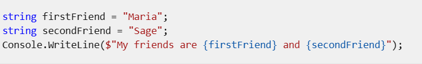
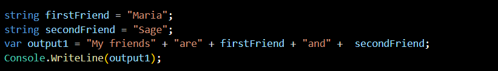
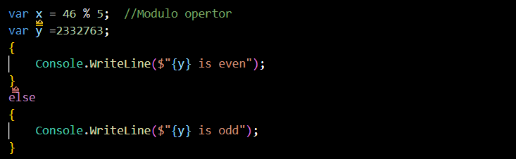
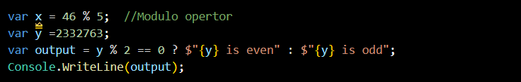
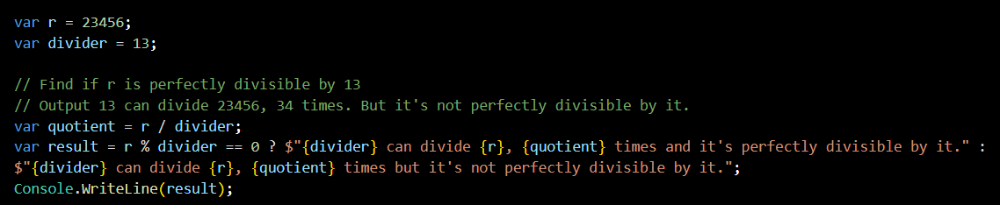
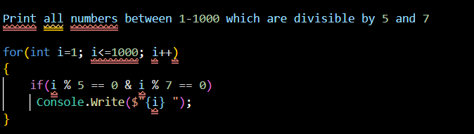

This is the example of Work with strings
You can also write this by another way. Example:
The output should be same for both code.(i.e. My friends are Maria and Sage)
We can also run this code by different way. For Example:
OR
Here is some snapshots of divider and printing numbers.
 Here we write "Console.Write()" only because if we use "Console.WriteLine()", the numbers will shown in one by one line but if we use "Console.Write()" your numbers will shown on one line orderly.